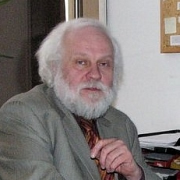

Genis and Vail
Russians in America: The Third Wave
Genis and Vail.
Genis and Vail. Many viewed them as inseparable. They would do some 170 articles for Новый американец and between 1985 and 1994 they had another 350 articles for Панорама. They were in a sense the barometer of Russian émigré culture primarily in the United States. They would also work in the glory years of Radio Liberty out of the New York office in the mid 1980s.
Aleksandr (Sasha) Genis (1953-). Genis arrives in the United States in 1977 and works for Новое русское слово. But his claim to fame comes with his collaboration on articles and books with Petr Vail. Together they edit for a short time Семь дней, a weekly literary supplement to Novoe Russkoe Slovo, but they achieve almost star status when they become the chief literary critics of Novyj Amerikanets, They will also work in the1980s for Radio Liberty in New York. Their 1982 book on Contemporary Russian Prose (Современная русская проза) was one of the first serious investigations of Russian literature abroad. Their Paradise Lost (Потерянный рай, 1983) reflected on the American experience and the disconnect between expectation and reality. Together they published five volumes, most of which have been republished in Russia. Both were strong supporters of Brodsky and Dovlatov and Genis himself has characterized their own contribution as creating a Russian language that was neither outdated as that of earlier emigrations nor replete with Soviet conventions. Genis continues to write today, although his intellectual soulmate, Vail is in Prague. An electronic search of publications by Genis reveals over fifty titles.
I spoke with Genis on October 18, 2006. We met at a cafe on the corner of Bleeker and MacDougall Streets in Manhattan, where he and Vail’ had met with Dovlatov during the heydays of Novyj Amerikanec. He has strong opinions of the Third Wave which he considered to embody the essence of Russian literature at that time. He did note one exception, Aleksandr Solzhenitsyn, who never recognized the immigration. According to Genis, it was the Third Wave that preserved and saved Russian literature, primarily in the persons of Brodsky and Dovlatov. He did note, however, that much had been written in Russia, and first published here. Much less was created here, at least in the beginning. The conflicts of the Third Wave were aesthetic ones, not political. The linguistic question, the new Soviet based Russian language, was a key differentiator between the Third and earlier waves. The language created for example in Новый американец was new and fresh; it was the language of "язык дружного общения".
Censorship gave birth to Russian émigré literature. Genis spoke highly of Ardis as the protector "покровитель" of Russian literature in those years.
"Эмигрантская литература кончилась, когда Советский Союз разрушился" Ironically Genis sees current Russians in America as the last vestiges of the Soviet Union. "Советский Сoюз еще существует в Брайтон Бич." He did complain that the Third Wave had not enjoyed great success with translations (a situation that persists to today) in spite of the positive aspects of now being widely published in Russia.
Genis added a curious footnote to the Russians in American recalling the movie made by Slava Tsukerman, Liquid Sky.
When I asked Genis of his own plans vis-à-vis memoirs of the Third Wave he replied "Я свое уже сделал."

Petr Vail' (1949-). He came to the United States in 1977 and his career path dove-tailed with that of his friend and co-author Aleksandr Genis. Vail' is now at Radio Free Europe / Radio Liberty in Prague where he continues to broadcast and write about Russian literature. He remains a prolific writer with forty works to his name. (e-mail: VailP@rferl.org)Two important works by the both include the article: "Мы – с Брайтон Бич" in Время и мы (1979), and the book, Современная русская проза. An article in 1986 cited by Glad (425) bemoaned the lack of readers for émigré literature.
Потерянный рай. Эмиграция: попытки автопортрета. (Jerusalem: 1983). Here follow some notes on the book.
They speak of the need of witnesses to record the emigration. (9-10).
On traveling to America "там есть все, чего нам не хватает -- деньги, мудрость, счастье." (92).
Yet America never understood what we wanted. "А мы хотели долгожданного рая -- немедленно и даром." (97).
The arrival of emigrants was sobered by the reality of having arrived in a middle-class. Yet they had nowhere to return to: "нам некуда возвращаться — поскольку мы переросли свое прошлое, и нам хочется идти вперед, потому что нам чуждо наше будущее. (105).
Russians émigrés were in search of a goal, "смысл", they, unlike earlier emigrations, had come not to wait, but to live. The irony, of course, is that unlike earlier waves they would be presented with a choice. Genis and Vail were in search of a mission - hope that "Эмиграция могла бы стать архивом, музеем, хранилищем, где все ценности русской культуры стояли бы рядом, на соседних полках."(121).
What did the émigrés lose - a dream. But they too gained. (191-193)."от советского человека -- к человеку просто."
Aleksandr Genis. Довлатов и окрестности (M: 1999). Genis will recall much of the 1980s and its heady atmosphere. The book is a valuable retrospective and good starting point for one who wants to understand the Third Wave, especially in the New York area. Two notes on Brighton Beach:
"Рассвет и закат нашей эмиграционной столицы " (170) and "Брайтон Бич можно было презирать, но не игнорировать. Там жили наши читатели." (179).
Who, What, Where and When?
Internet Links
Другие Ссылки